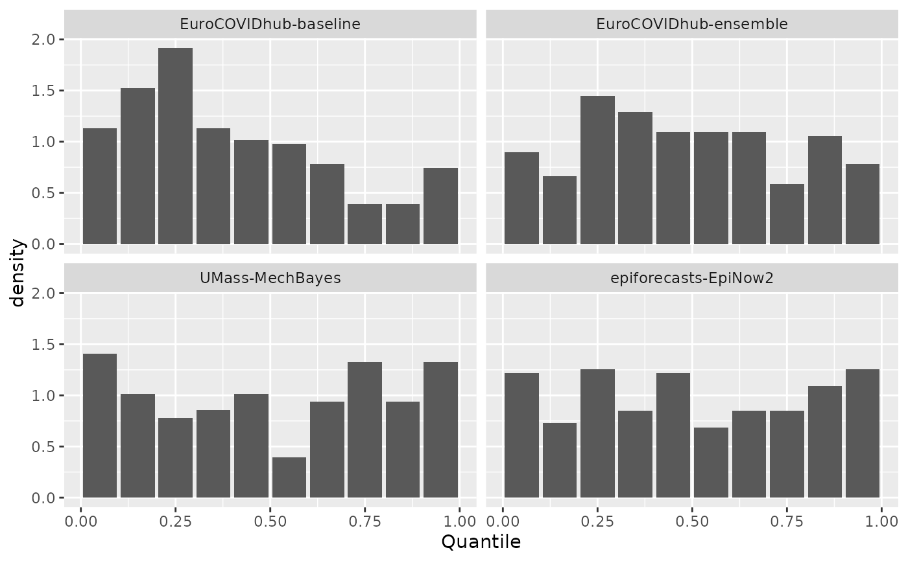
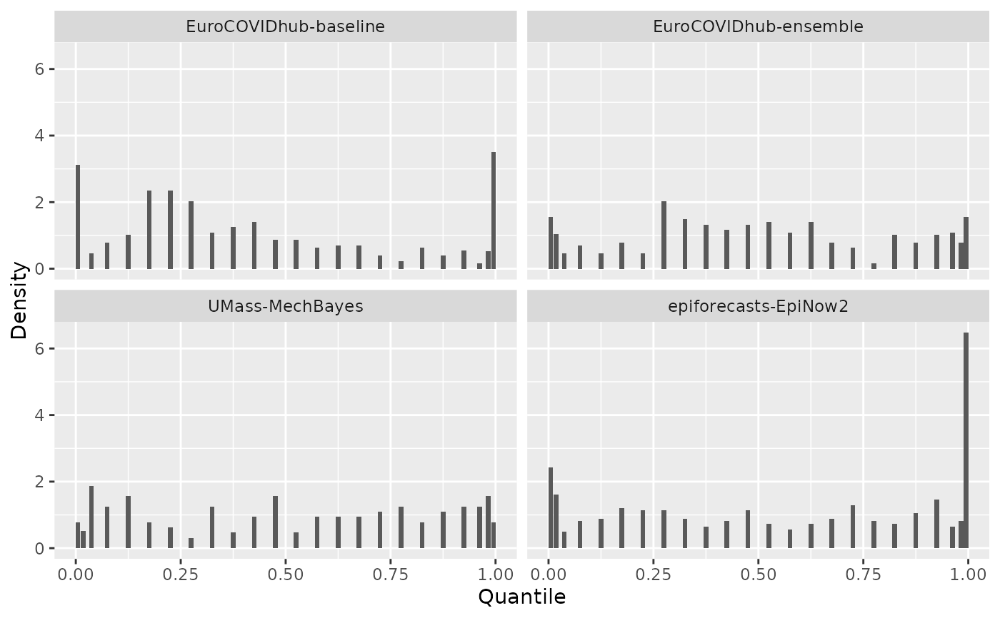

Probability integral transformation histogram
Source:R/class-forecast-quantile.R, R/class-forecast-sample.R, R/get-pit-histogram.R
get_pit_histogram.RdGenerate a Probability Integral Transformation (PIT) histogram for validated forecast objects.
See the examples for how to plot the result of this function.
Usage
# S3 method for class 'forecast_quantile'
get_pit_histogram(forecast, num_bins = NULL, breaks = NULL, by, ...)
# S3 method for class 'forecast_sample'
get_pit_histogram(
forecast,
num_bins = 10,
breaks = NULL,
by,
integers = c("nonrandom", "random", "ignore"),
n_replicates = NULL,
...
)
get_pit_histogram(forecast, num_bins, breaks, by, ...)
# Default S3 method
get_pit_histogram(forecast, num_bins, breaks, by, ...)Arguments
- forecast
A forecast object (a validated data.table with predicted and observed values).
- num_bins
The number of bins in the PIT histogram. For sample-based forecasts, the default is 10 bins. For quantile-based forecasts, the default is one bin for each available quantile. You can control the number of bins by supplying a number. This is fine for sample-based pit histograms, but may fail for quantile-based formats. In this case it is preferred to supply explicit breaks points using the
breaksargument.- breaks
Numeric vector with the break points for the bins in the PIT histogram. This is preferred when creating a PIT histogram based on quantile-based data. Default is
NULLand breaks will be determined bynum_bins. Ifbreaksis used,num_binswill be ignored. 0 and 1 will always be added as left and right bounds, respectively.- by
Character vector with the columns according to which the PIT values shall be grouped. If you e.g. have the columns 'model' and 'location' in the input data and want to have a PIT histogram for every model and location, specify
by = c("model", "location").- ...
Currently unused. You cannot pass additional arguments to scoring functions via
.... See the Customising metrics section below for details on how to usepurrr::partial()to pass arguments to individual metrics.- integers
How to handle integer forecasts (count data). This is based on methods described Czado et al. (2007). If "nonrandom" (default) the function will use the non-randomised PIT method. If "random", will use the randomised PIT method. If "ignore", will treat integer forecasts as if they were continuous.
- n_replicates
The number of draws for the randomised PIT for discrete predictions. Will be ignored if forecasts are continuous or
integersis not set torandom.
References
Sebastian Funk, Anton Camacho, Adam J. Kucharski, Rachel Lowe, Rosalind M. Eggo, W. John Edmunds (2019) Assessing the performance of real-time epidemic forecasts: A case study of Ebola in the Western Area region of Sierra Leone, 2014-15, doi:10.1371/journal.pcbi.1006785
Examples
library("ggplot2")
result <- get_pit_histogram(example_sample_continuous, by = "model")
ggplot(result, aes(x = mid, y = density)) +
geom_col() +
facet_wrap(. ~ model) +
labs(x = "Quantile", "Density")

# example with quantile data
result <- get_pit_histogram(example_quantile, by = "model")
ggplot(result, aes(x = mid, y = density)) +
geom_col() +
facet_wrap(. ~ model) +
labs(x = "Quantile", "Density")
